Haz clic en el corazón
Para la mujer más bella de este universo!
Conocerte fue lo más hermoso que me pudo haber pasado, jamás me imaginé que un día te iba a conocer, simplemente no estaba en mis planes, pero sí, llegaste de la nada y me enamoré desde el primer momento en que te vi.
No sé cómo lo hiciste ni mucho menos si fue o no tu intención, pero si me alegra que haya sucedido, porque ahora cada que pienso en ti, sonrío.
Si me preguntan qué cambió en mí este último tiempo, no voy a hablar de trabajo, ni de metas, ni de nada de eso. Voy a decir tu nombre con toda tranquilidad y sin dudarlo mi hermosa mujercita.
Porque desde que estás en mi vida, descubrí lo bonito que es dedicarle mi tiempo a la persona que amo, me descubrí fijándome en detalles que antes pasaban de largo. La forma en que dices mi nombre cuando estás cansada. El cómo se te ilumina la cara cuando algo te hace gracia de verdad. Esa costumbre tuya de preguntar cómo estoy aunque tú tengas el día patas arriba.
No eres lo mejor que me pasó por una razón grande y épica, sino que eres lo mejor que me pasó por mil razones pequeñas que se me quedan grabadas en el corazón. Por la manera en que me escuchas sin interrumpir, por cómo te ríes de mis tonterías aunque las hayas escuchado antes, por esa terquedad tuya que sale cuando algo te importa, y que a mí me hace sentir que contigo las cosas van en serio.
Antes pensaba que el cariño se demostraba con gestos grandes, pero contigo aprendí que a veces basta con quedarte. Con quedarte en una conversación aunque ya sea muy tarde y estemos cansados, con quedarte aunque el día haya sido agotador o malo, con quedarte aunque no tengas las palabras exactas. Ese tipo de quedarse pesa más que cualquier cosa que me hayan dicho antes amor de mi vida.
Te escribo esto porque me da paz saber que tengo a alguien con quien no necesito actuar. Con quien puedo estar callado, cansado, distraído, y aún así sentirme bien. Eso no lo había sentido antes y me encanta.
No sé qué nos espere más adelante, no sé si todo va a salir perfecto. Lo que sí sé es que hoy, ahora mismo, no cambiaría por nada el haberte encontrado. Eres mi lugar seguro, mi amor bonito, mi mujercita y sobre todo, la niñita de mis ojos, y el hecho de poder decir eso sin que me suene raro, sin que me pese, me dice todo lo que necesito saber.
Gracias por estar. Gracias por quedarte. Gracias por hacerme sentir que llegar a casa, aunque sea en un mensaje, tiene sentido.
Con todo lo que soy y con todo mi corazón...
Te amo infinitamente y te extraño de la misma manera.
Christian


Lo que con amor empezó, que con amor termine...
A veces creo que aquel día desperté algo que nunca debí tocar, que no debimos habernos hablado, pero las cosas simplemente se dieron y, desde que te vi, mi corazón se enamoró de ti; sin una palabra de por medio, sin tocarte, sin percibir un aroma, sin conocerte. Simplemente fue amor a primera vista.
Quizás no debí mirarte tanto o quedarme un segundo más de lo necesario, porque, ¿sabes? Descubrí que, en ocasiones, las cosas pequeñas terminan ocupándolo todo, casi como una grieta que no deja de abrirse.
Tal vez me dejé llevar por eso que sentí contigo desde el primer momento. Era calma y emoción al mismo tiempo, más aún cuando nos dimos nuestro primer beso. Para mí, eso fue como haber firmado algo; fue como encender una luz que había estado apagada. Tú me llenaste de alegrías, de felicidad, y eso lo amé infinitamente. Mi corazón se sentía feliz y bonito.
Tu voz se quedó grabada en mi memoria desde la primera llamada. Las primeras risas, el primer llanto, el primer enojo; todo quedó completamente plasmado en mi alma y ahora son recuerdos hermosos que atesoraré para siempre. Porque sí, todo de ti me enamoró, y más aún cuando empezaste a formar parte de mi vida por completo con el pasar de los días.
Ahora hay un vacío enorme en mi mente y en mi corazón. Tardará en cerrarse, pero supongo que ese es el precio de haber amado tanto y de que ahora ya no estés presente en mi vida. Pero, ¿sabes algo? Siempre te desearé lo mejor, porque para mí tú eres esa princesita a quien un día quise cuidar y hacer feliz por el resto de mi vida. Y aunque no sea conmigo, deseo de todo corazón que seas feliz.
Hoy decido dejar descansar nuestra historia, y no porque quiera hacerlo. Me duele hacerlo, pero lo hago porque entendí que tú me habías soltado hace tiempo y también porque necesito estar bien, necesito sanar. Para mí es cansado escribirte fríamente, porque dentro de mi cabeza tú sigues siendo esa niña a quien amo, y me cuesta no tratarte de esa manera. Sé que ya no somos nada, pero yo no puedo ocultar lo que siento por ti, y mucho menos reprimirlo para adaptarme a nuestra nueva realidad.
Fue bonito mientras duró. Te amo con el alma, con todo mi ser, y eso llévatelo siempre en tu cabecita y en tu corazón. Yo de ti me llevo solamente las cosas bonitas, los momentos hermosos que vivimos.
Deseo que encuentres a esa persona ideal, ideal para ti y para tu familia, ya sea hoy, mañana o dentro de unos años, pero que te ame igual o más de lo que yo te amé. Recuerda no dejar de creer en el amor, porque eso es lo bonito de la vida.
No me queda más por decir. Simplemente sé feliz, mi bella y hermosa princesita.
Te amo infinitamente...
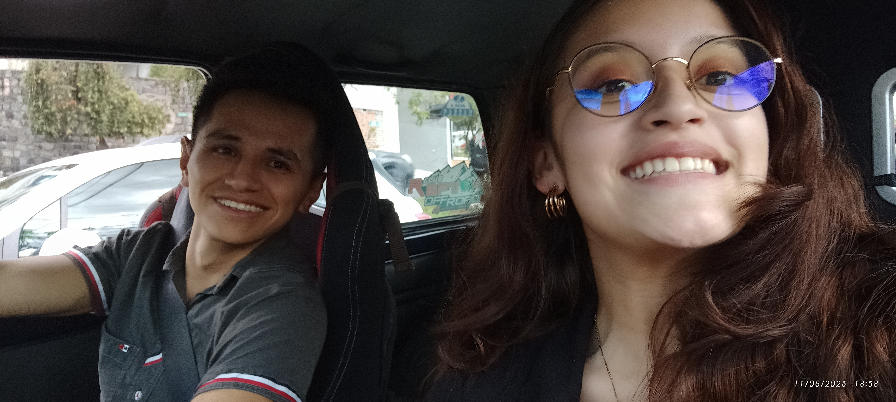
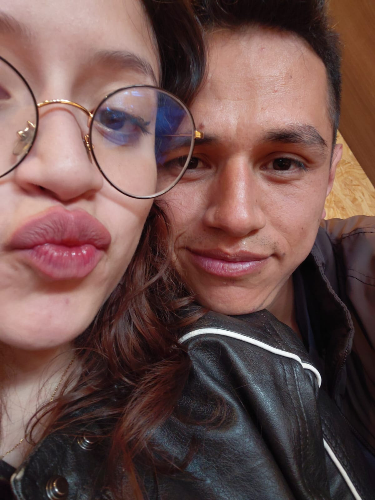
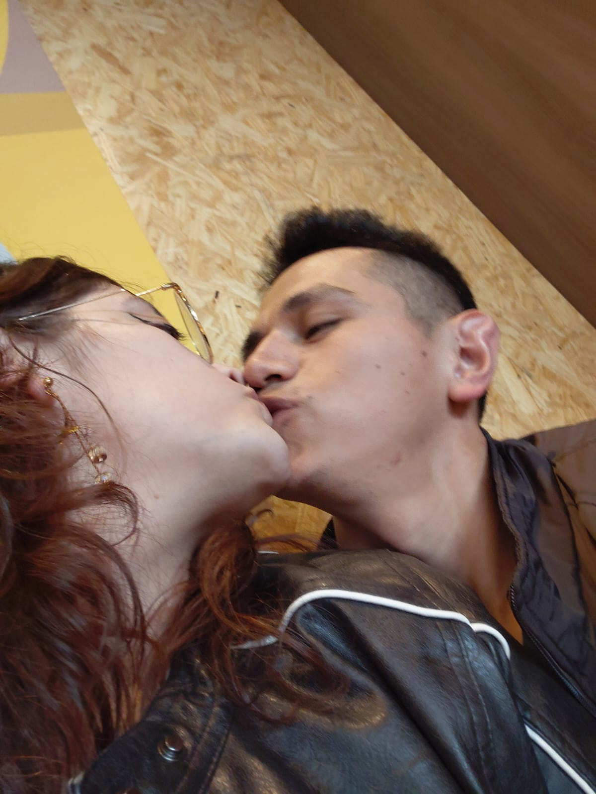
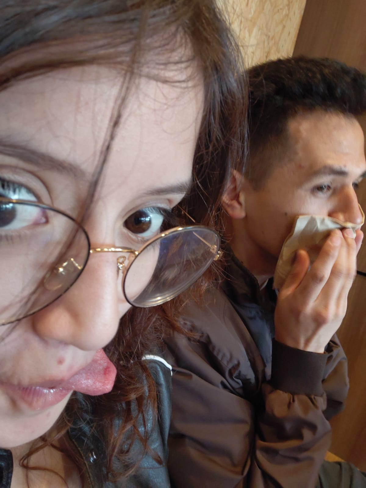
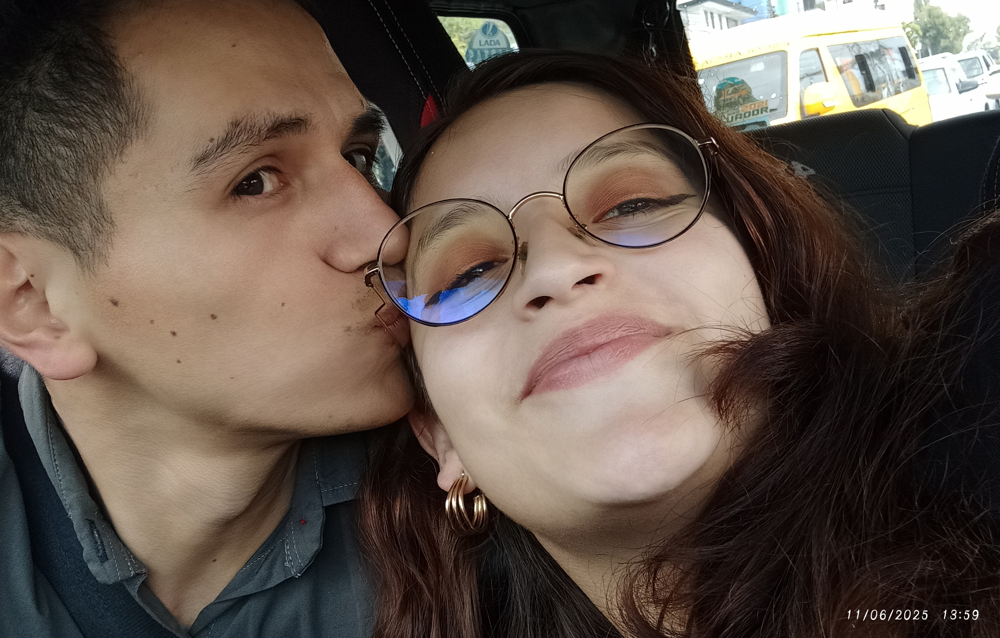
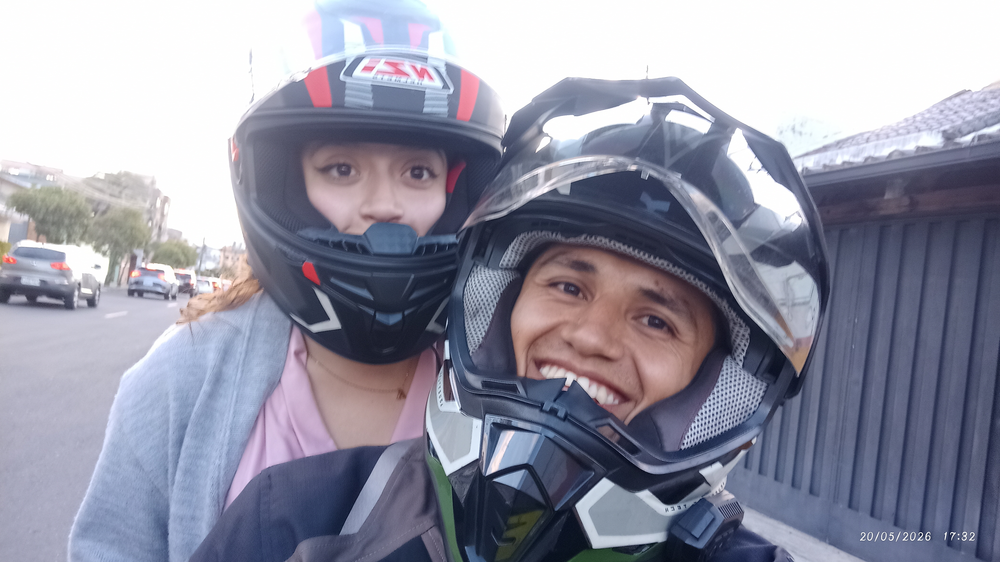
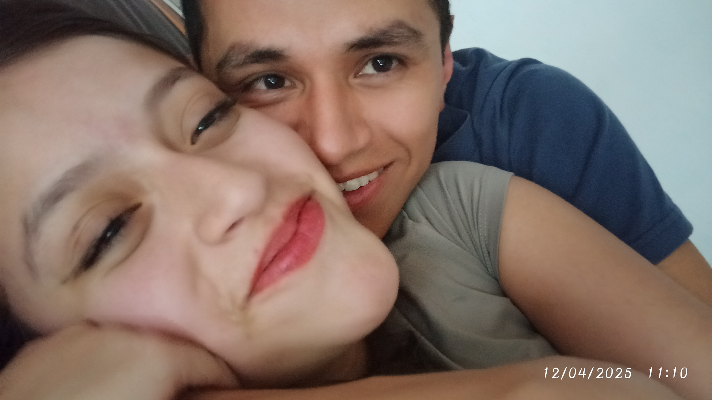
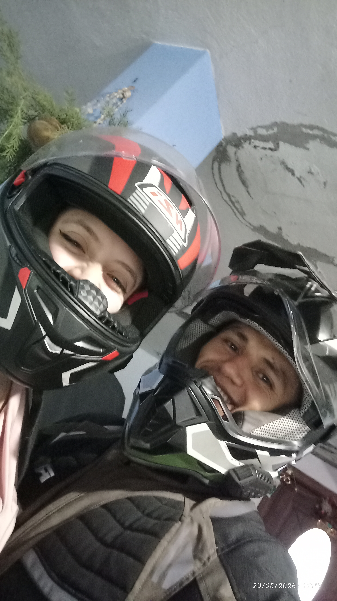
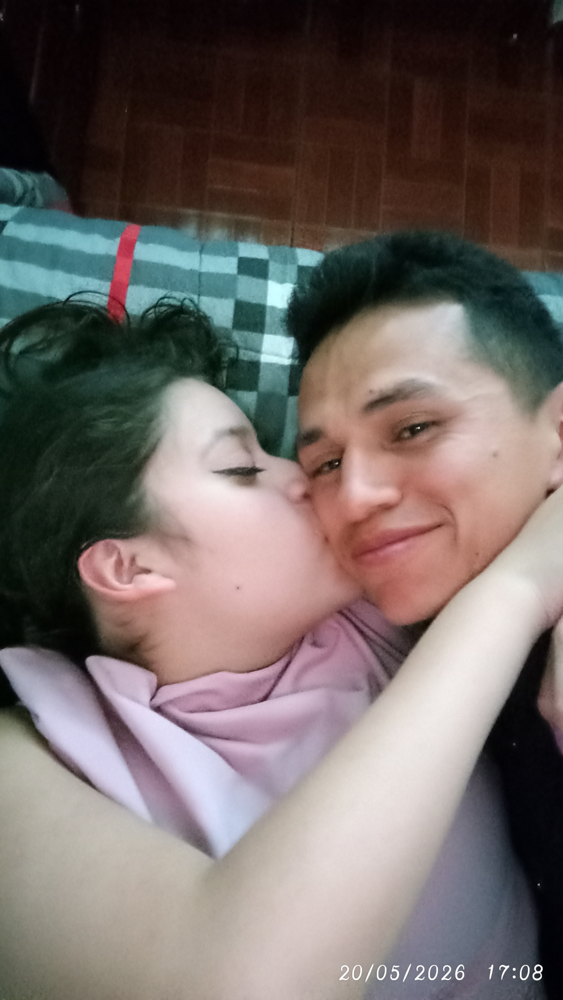
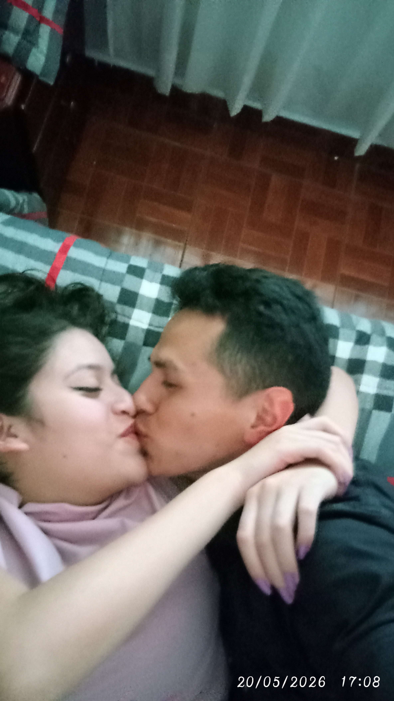
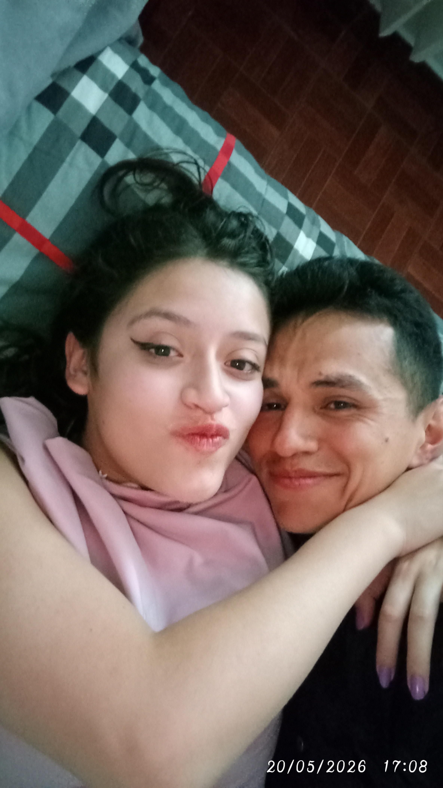
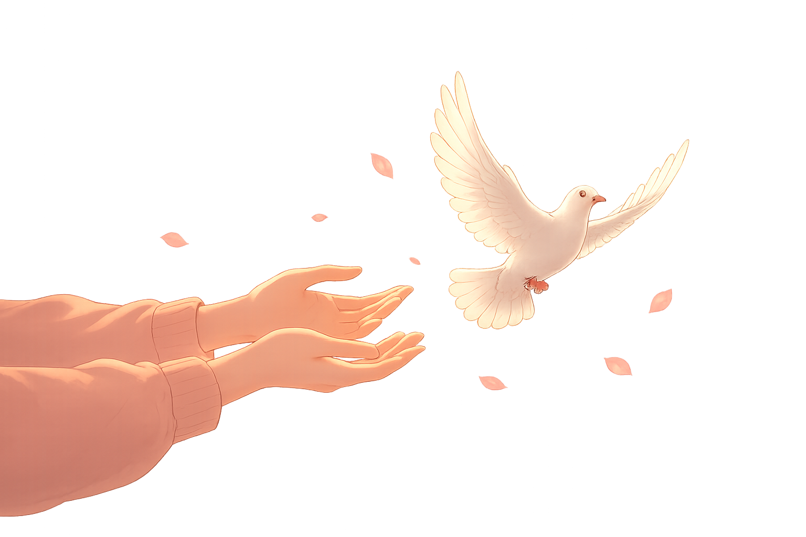
ADIOS...
Gracias por cada sonrisa.
Gracias por cada recuerdo.
Gracias por haber existido en mi historia.
Si el destino nos lo permite...
Nos volveremos a encontrar.